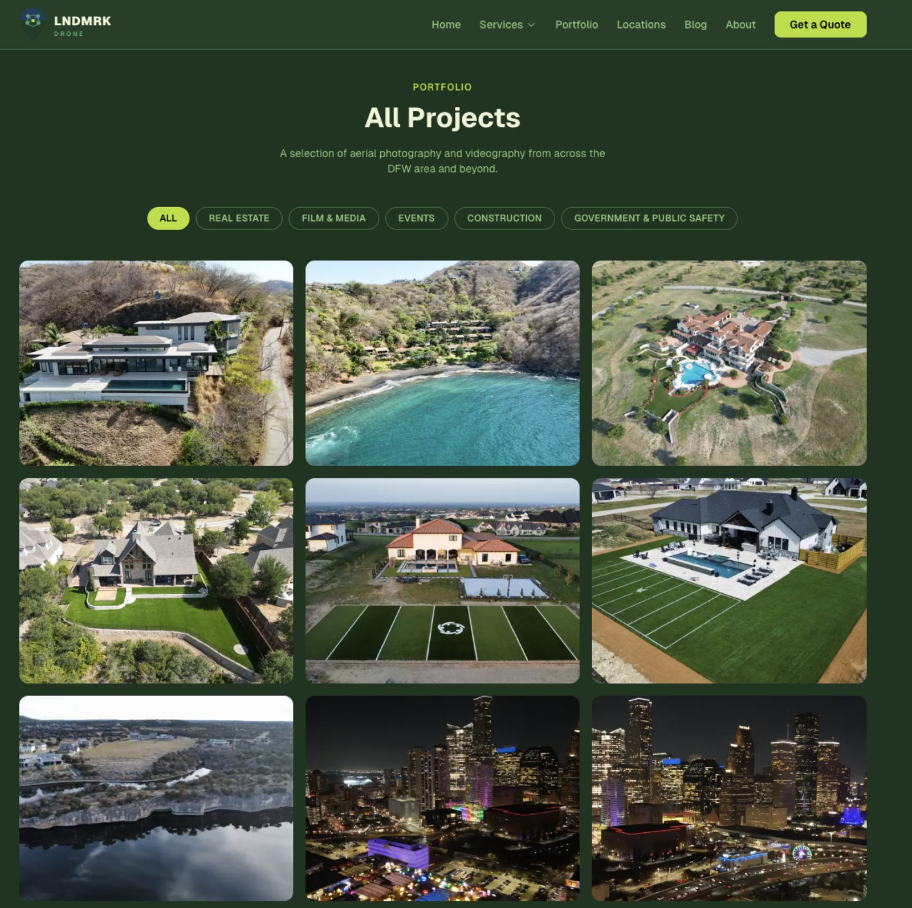
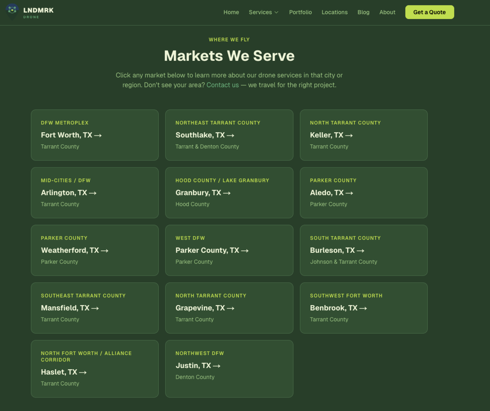

LNDMRK Drone
FAA Part 107 drone photography for Fort Worth & DFW — built from zero web presence to 36 indexed pages, 16 local markets, and dual-layer Meta CAPI conversion tracking in a matter of days.

20 years of marketing chops. Zero web presence.
Colin Burns has been in sales and marketing for 20 years. He knows what stops the scroll, what sells a listing, and what makes clients look incredible. He also happens to be an FAA Part 107 certified drone pilot with 500+ commercial flights.
The problem: his business had no web presence to match his expertise. When a Southlake real estate agent searched "drone photographer Fort Worth" or a Weatherford contractor needed "construction aerial documentation," LNDMRK Drone didn't exist on the internet.
Leads came through word of mouth. Bookings lived in text threads. No portfolio the world could see. No way to capture a Facebook ad click and turn it into a retargeted lead. No automated system to handle quote requests at 11pm when a Realtor needed aerial photos for a Monday listing.
The goal: build a production-grade website that works as hard as Colin does — generating qualified inbound leads, ranking for local searches across DFW, and capturing every visitor interaction with zero manual effort.
A data-driven site — add a service, get a full SEO page.
We built a fully custom Next.js 15 web application — not a template, not a WordPress theme. Every architectural decision was made to serve one purpose: get LNDMRK Drone found by the right buyer, at the right moment, and convert them automatically.
Instead of hand-coding individual pages, we built a single content model in TypeScript that powers the entire site. Adding a new service, city, or portfolio category takes one data entry — the site generates the page, the SEO metadata, the structured schema markup, and the sitemap URL automatically.
- Next.js 15 (App Router) — server-rendered pages for SEO, client-side interactivity where needed.
- TypeScript — type-safe content model across services, locations, and portfolio.
- Tailwind CSS v4 — custom brand design system (forest green + lime) in the CSS layer.
- Resend — transactional email API for instant quote delivery.
- Meta CAPI + Pixel — dual-layer conversion tracking with SHA256 hashing and event deduplication.
- Vercel — edge-deployed, globally distributed, zero-config hosting. Push to main, live in 2 minutes.
Four automations that turn visitors into inbound leads.
One entry, one full SEO page.
Services managed from a single TypeScript file. Each entry automatically generates a dedicated page with unique H1, meta tags, feature grid, FAQ section, related-service links, canonical URL, and JSON-LD schema.
Pages that used to take a day now take 30 seconds.16 city pages from one template.
Fort Worth, Southlake, Keller, Arlington, Granbury, Aledo, Weatherford, Parker County, Burleson, Mansfield, Grapevine, Benbrook, Haslet, Justin and more — each with unique market context, local FAQs, and LocalBusiness schema.
A Southlake luxury agent or a Granbury lakefront seller sees a page built specifically for them.Every submission triple-tracked.
On submit: (1) formatted quote delivered to inbox via Resend, (2) Lead event fires to Meta Pixel, (3) same event fires server-side via CAPI with SHA256-hashed user data. A shared event_id prevents double-counting — even when an ad blocker kills the browser Pixel.
Zero dropped leads, even when Safari or iOS ATT strips the browser event.139 photos with smart filtering.
Processed and organized 139 drone photos across 6 categories. Compressed the full library from 843MB to 114MB without visible quality loss — solving a GitHub file-size ceiling in the process. Live category filtering + Next.js image optimization.
A Facebook ad visitor filters to "Real Estate" and sees 27 relevant photos immediately.Static-generated, schema-tagged, pipeline-ready.
The entire site is statically generated at build time using Next.js App Router's generateStaticParams() — every service page and location page is pre-rendered as HTML before any user ever visits. No database query, no server round-trip, no rendering delay. Google's crawler sees fully-rendered, semantically structured HTML on the first request.
Structured data on six page types — home, about, contact, services, locations, blog. Dynamic sitemap at /sitemap.xml auto-updates with every new page added to the data model.
The Meta CAPI integration runs in the Next.js API layer using Node's native crypto module for SHA256 hashing — no third-party libraries. The CAPI call is fired asynchronously and non-blocking: if Meta's API is down, the contact form still works perfectly.
The image compression pipeline used macOS's native sips tool to batch-resize 150 photos to 1920px at 82% quality — reducing payload from 843MB to 114MB in a single command.
From no web presence to a fully operational lead engine.
Quote requests delivered instantly. Tracked in GA4. Attributed in Meta Ads Manager. Dual-layer ad tracking ready for retargeting the moment ad spend begins. Not a pitch deck about what we could build — a working, deployed, revenue-generating product, shipped.
Screenshots.
The project in the wild — UI from the live product.


Need a lead engine that actually tracks?
If your ads are spending money and you can't tell what's converting, there's a fix. Tell us what you're running and we'll scope what it would take to see every signal.
Let's Talk